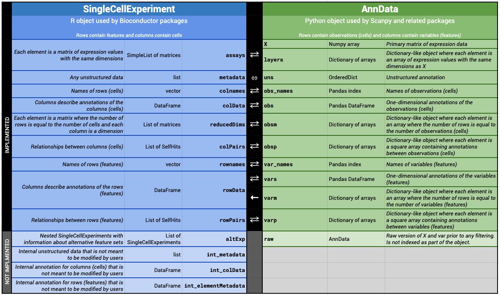

R/AnnData2SCE.R, R/SCE2AnnData.R
AnnData-Conversion.RdConversion between Python AnnData objects and SingleCellExperiment::SingleCellExperiment objects.
AnnData2SCE(
adata,
X_name = NULL,
layers = TRUE,
uns = TRUE,
var = TRUE,
obs = TRUE,
varm = TRUE,
obsm = TRUE,
varp = TRUE,
obsp = TRUE,
raw = FALSE,
skip_assays = FALSE,
hdf5_backed = TRUE,
verbose = NULL
)
SCE2AnnData(
sce,
X_name = NULL,
assays = TRUE,
colData = TRUE,
rowData = TRUE,
varm = TRUE,
reducedDims = TRUE,
metadata = TRUE,
colPairs = TRUE,
rowPairs = TRUE,
skip_assays = FALSE,
verbose = NULL
)A reticulate reference to a Python AnnData object.
For SCE2AnnData() name of the assay to use as the primary
matrix (X) of the AnnData object. If NULL, the first assay of sce will
be used by default. For AnnData2SCE() name used when saving X as an
assay. If NULL looks for an X_name value in uns, otherwise uses "X".
Arguments specifying how
these slots are converted. If TRUE everything in that slot is converted, if
FALSE nothing is converted and if a character vector only those items or
columns are converted.
Logical scalar indicating whether to skip conversion of
any assays in sce or adata, replacing them with empty sparse matrices
instead.
Logical scalar indicating whether HDF5-backed matrices
in adata should be represented as HDF5Array objects. This assumes that
adata is created with backed="r".
Logical scalar indicating whether to print progress messages.
If NULL uses getOption("zellkonverter.verbose").
Arguments specifying how these slots are converted. If TRUE everything in
that slot is converted, if FALSE nothing is converted and if a character
vector only those items or columns are converted.
AnnData2SCE() will return a
SingleCellExperiment::SingleCellExperiment
containing the equivalent data from adata.
SCE2AnnData() will return a reticulate reference to an AnnData object
containing the content of sce.
These functions assume that an appropriate Python environment has already been loaded. As such, they are largely intended for developer use, most typically inside a basilisk context.
The conversion is not entirely lossless. The current mapping is shown below (also at https://tinyurl.com/AnnData2SCE):

In SCE2AnnData(), matrices are converted to a numpy-friendly format.
Sparse matrices are converted to
Matrix::dgCMatrix objects while all
other matrices are converted into ordinary matrices. If skip_assays = TRUE,
empty sparse matrices are created instead and the user is expected to fill in
the assays on the Python side.
For AnnData2SCE(), a warning is raised if there is no corresponding R
format for a matrix in the AnnData object, and an empty sparse matrix is
created instead as a placeholder. If skip_assays = NA, no warning is
emitted but variables are created in the
int_metadata() of the output to
specify which assays were skipped.
If skip_assays = TRUE, empty sparse matrices are created for all assays,
regardless of whether they might be convertible to an R format or not.
In both cases, the user is expected to fill in the assays on the R side.
metadata/uns conversionWe attempt to convert between items in the
SingleCellExperiment::SingleCellExperiment
metadata() slot and the AnnData uns slot. If
an item cannot be converted a warning will be raised.
uns conversionValues stored in the varm slot of an AnnData object are stored in a
column of rowData() in a
SingleCellExperiment::SingleCellExperiment
as a S4Vectors::DataFrame-class of matrices.
If this column is present an attempt is made to transfer this information
when converting from
SingleCellExperiment::SingleCellExperiment
to AnnData.
SpatialExperiment conversionIn SCE2AnnData(), if sce is a SpatialExperiment::SpatialExperiment
object, the spatial coordinates are added to the reducedDims slot before
conversion to an AnnData object.
writeH5AD() and readH5AD() for dealing directly with H5AD files.
if (requireNamespace("scRNAseq", quietly = TRUE)) {
library(basilisk)
library(scRNAseq)
seger <- SegerstolpePancreasData()
# These functions are designed to be run inside
# a specified Python environment
roundtrip <- basiliskRun(fun = function(sce) {
# Convert SCE to AnnData:
adata <- zellkonverter::SCE2AnnData(sce)
# Maybe do some work in Python on 'adata':
# BLAH BLAH BLAH
# Convert back to an SCE:
zellkonverter::AnnData2SCE(adata)
}, env = zellkonverterAnnDataEnv(), sce = seger)
}
#> Loading required package: reticulate
#> Loading required package: SingleCellExperiment
#> Loading required package: SummarizedExperiment
#> Loading required package: MatrixGenerics
#> Loading required package: matrixStats
#>
#> Attaching package: 'MatrixGenerics'
#> The following objects are masked from 'package:matrixStats':
#>
#> colAlls, colAnyNAs, colAnys, colAvgsPerRowSet, colCollapse,
#> colCounts, colCummaxs, colCummins, colCumprods, colCumsums,
#> colDiffs, colIQRDiffs, colIQRs, colLogSumExps, colMadDiffs,
#> colMads, colMaxs, colMeans2, colMedians, colMins, colOrderStats,
#> colProds, colQuantiles, colRanges, colRanks, colSdDiffs, colSds,
#> colSums2, colTabulates, colVarDiffs, colVars, colWeightedMads,
#> colWeightedMeans, colWeightedMedians, colWeightedSds,
#> colWeightedVars, rowAlls, rowAnyNAs, rowAnys, rowAvgsPerColSet,
#> rowCollapse, rowCounts, rowCummaxs, rowCummins, rowCumprods,
#> rowCumsums, rowDiffs, rowIQRDiffs, rowIQRs, rowLogSumExps,
#> rowMadDiffs, rowMads, rowMaxs, rowMeans2, rowMedians, rowMins,
#> rowOrderStats, rowProds, rowQuantiles, rowRanges, rowRanks,
#> rowSdDiffs, rowSds, rowSums2, rowTabulates, rowVarDiffs, rowVars,
#> rowWeightedMads, rowWeightedMeans, rowWeightedMedians,
#> rowWeightedSds, rowWeightedVars
#> Loading required package: GenomicRanges
#> Loading required package: stats4
#> Loading required package: BiocGenerics
#> Loading required package: generics
#>
#> Attaching package: 'generics'
#> The following objects are masked from 'package:base':
#>
#> as.difftime, as.factor, as.ordered, intersect, is.element, setdiff,
#> setequal, union
#>
#> Attaching package: 'BiocGenerics'
#> The following objects are masked from 'package:stats':
#>
#> IQR, mad, sd, var, xtabs
#> The following objects are masked from 'package:base':
#>
#> Filter, Find, Map, Position, Reduce, anyDuplicated, aperm, append,
#> as.data.frame, basename, cbind, colnames, dirname, do.call,
#> duplicated, eval, evalq, get, grep, grepl, is.unsorted, lapply,
#> mapply, match, mget, order, paste, pmax, pmax.int, pmin, pmin.int,
#> rank, rbind, rownames, sapply, saveRDS, table, tapply, unique,
#> unsplit, which.max, which.min
#> Loading required package: S4Vectors
#>
#> Attaching package: 'S4Vectors'
#> The following object is masked from 'package:utils':
#>
#> findMatches
#> The following objects are masked from 'package:base':
#>
#> I, expand.grid, unname
#> Loading required package: IRanges
#> Loading required package: GenomeInfoDb
#> Loading required package: Biobase
#> Welcome to Bioconductor
#>
#> Vignettes contain introductory material; view with
#> 'browseVignettes()'. To cite Bioconductor, see
#> 'citation("Biobase")', and for packages 'citation("pkgname")'.
#>
#> Attaching package: 'Biobase'
#> The following object is masked from 'package:MatrixGenerics':
#>
#> rowMedians
#> The following objects are masked from 'package:matrixStats':
#>
#> anyMissing, rowMedians
#> + /github/home/.cache/R/basilisk/1.19.3/0/bin/conda create --yes --prefix /github/home/.cache/R/basilisk/1.19.3/zellkonverter/1.17.2/zellkonverterAnnDataEnv-0.10.9 'python=3.12.7' --quiet -c conda-forge --override-channels
#> + /github/home/.cache/R/basilisk/1.19.3/0/bin/conda install --yes --prefix /github/home/.cache/R/basilisk/1.19.3/zellkonverter/1.17.2/zellkonverterAnnDataEnv-0.10.9 'python=3.12.7' -c conda-forge --override-channels
#> + /github/home/.cache/R/basilisk/1.19.3/0/bin/conda install --yes --prefix /github/home/.cache/R/basilisk/1.19.3/zellkonverter/1.17.2/zellkonverterAnnDataEnv-0.10.9 -c conda-forge 'python=3.12.7' 'anndata=0.10.9' 'h5py=3.12.1' 'hdf5=1.14.3' 'natsort=8.4.0' 'numpy=2.1.2' 'packaging=24.1' 'pandas=2.2.3' 'python=3.12.7' 'scipy=1.14.1' --override-channels
#> ℹ Using the 'counts' assay as the X matrix
#> ℹ Using stored X_name value 'counts'
#> Warning: index contains duplicated values: row names not set
#> Warning: The names of these selected obs columns have been modified to match R
#> conventions: 'body mass index' -> 'body.mass.index', 'clinical information' ->
#> 'clinical.information', 'single cell well quality' ->
#> 'single.cell.well.quality', 'submitted single cell quality' ->
#> 'submitted.single.cell.quality', and 'cell type' -> 'cell.type'